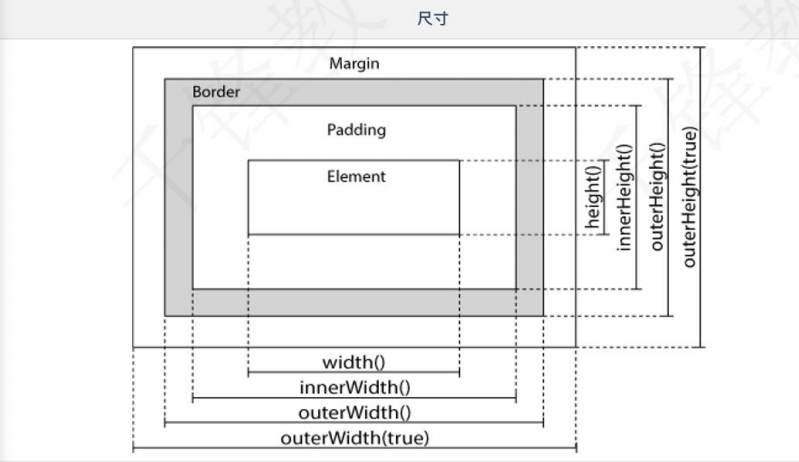

09 jQuery1.概述2.特点3.安装3.1直接引用3.2CDN引用4.jQuery语法4.1基本使用4.2基本选择器4.3层次选择器4.4简单过滤选择器4.5属性过滤选择器5.jQuery事件操作6.jQuery效果7.设置、获取内容8.关于元素8.1获取页面元素的方法8.2添加元素8.3删除元素8.4设置样式CSS操作8.5尺寸操作8.6 jQuery遍历8.6.2循环遍历9.隔行变色10. 省市级联11.jQuery 让渡12.全选案例13.jQueryAJAX13.1Controller13.2 ajax.jsp 运用jQuery简化版13.3 原生AJAX
- jQuery是一个快捷、简洁的JavaScript代码库
- 设计宗旨：Write Less,Do More
- 提供简便的JavaScript操作方式
- 优化HTML文档操作、事件处理、动画设计和AJAX交互
- 具有独特的链式语法
- 支持高效灵活的CSS语句
- 拥有丰富的插件
- 兼容各种主流的浏览器
从jQuery。com官网或者GitHub下载。这里使用1.12.4版本，兼容性好
jQuery是一个JavaScript文件，使用HTML的标签引用
xxxxxxxxxx<script src="js/jquery-1.12.4.js"></script>
CDN全称 Content Delivery Netword 内容分发网络 使用用户就近获取所需内容，降低网络拥塞，提高用户的相应访问速度和命中率
xxxxxxxxxx<script src="http://lib.sinaapp.com/js/jquery/2.0.2/jquery-2.0.2.min.js"></script>
$(匿名函数)：表示页面DOM加载完毕，则执行，比onload事件执行早，可以写多个。$是jQuery函数的缩写
xxxxxxxxxx$(function () {alert("页面加载完了");});//完整版jQuery(document).ready(function () {alert("页面加载完了");});$(selector).action();
xxxxxxxxxx$("#btn1").click(function () {$("p").hide();})selector(选择符) 表示查找HTML元素
action（）执行对元素的操作
- 元素选择器
- id选择器
- class选择器
xxxxxxxxxx//1.标签选择器$("#btn1").click(function () { $("p").hide();//选择了页面所有的p标签，隐藏});//2.ID选择器$("#btn2").click(function () { $("#beautiful").show();//显示id为beautiful的标签内容});//3.class选择器 每一个标签都可以有相同的class属性$("#btn3").click(function () { $(".zhuixu").show();//将class属性为zhuixu的标签，显示})
- 通过DON元素之间的层次关系来获取元素
- 主要层次：后代、子代、相邻、兄弟关系
xxxxxxxxxx<body> <div id="div1"> <p>宋轶真好看</p> <p>江疏影真好看</p> <p id="dlrb">迪丽热巴真好看</p> <p>古力娜扎真好看</p> <p>张小斐真好看</p> <p>宋祖儿真好看</p> <div id="div2"> <p>日照香炉生紫烟</p> <p>遥看瀑布挂前川</p> </div> </div> <button id="btn1">后代选择器</button> <button id="btn2">子代选择器</button> <button id="btn3">相邻选择器</button> <button id="btn4">兄弟选择器</button> <script type="text/javascript"> //后代 子代 相邻 兄弟 $("#btn1").click(function () { $("#div1 p").hide();//将div1的所有子标签都隐藏 // $("#div2 p").hide(); }); //子代 $("#btn2").click(function () { $("#div1>p").hide();//将div1的子元素隐藏 }); //相邻 选中的元素之后的相邻的一个元素 $("#btn3").click(function () { $("#dlrb+p").hide(); }); //兄弟 选中的元素之后所有兄弟元素(同级别) $("#btn4").click(function () { $("#dlrb~p").hide(); }); </script></body>
- 书写时都以(:) 开头，使用广泛
:first 获取第一个元素 返回单个元素
:last 获取最后一个元素 返回单个元素
:even 获取偶数行的元素 0为偶数 返回元素集合
:odd 获取奇数行的元素 0为偶数 返回元素集合
索引是从0开始的，根据下标值进行单个获取或多个获取
- :eq 索引等于某个值
- :gt: greater than 大于
- :gte: greater than or equal 大于等于
- :lt: less than 小于
- :lte: less than or equal 小于等于
xxxxxxxxxx<body> <ul> <li>郭富城</li> <li>黎明</li> <li>刘德华</li> <li>刘普曦</li> <li>周润发</li> <li>张学友</li> </ul> <br/> <button id="btn1">改变第一个</button> <button id="btn2">改变最后一个</button> <button id="btn3">改变偶数行</button> <button id="btn4">改变奇数行</button> <button id="btn5">改变刘普曦</button> <script type="text/javascript"> //简单过滤 获得第一个 获得最后一个 $("#btn1").click(function () { //将第一个li标签，颜色改为粉色 $("li:first").css("color","pink"); }); $("#btn2").click(function () { $("li:last").css("color","green"); }); $("#btn3").click(function () { //索引值是从0开始的， 0算为了偶数 $("li:even").css("color","darkgray"); }); $("#btn4").click(function () { $("li:odd").css("color","blue"); }); /*索引是从0开始的，根据下标值进行单个获取或多个获取 3. :eq 索引等于某个值 :gt: greater than 大于 :gte: greater than or equal 大于等于 :lt: less than 小于 :lte: less than or equal 小于等于*/ $("#btn5").click(function () { // $("li:eq(3)").css("color","orange");改变下标3的内容 // $("li:gt(3)").css("color","orange");//改变下标大于3的内容 $("li:lt(3)").css("color","orange");//改变下标小于3的内容 }); </script></body>
根据元素某个属性获取元素 如：input[name*= 'r'] //改变属性的值 包含r的input标签
- [attribute] 获取包含给定属性的元素 元素集合
- [attribute=value] 获取等于给定的属性是某个特定值的元素 元素集
- [attribute!=value] 获取不等于给定的属性是某个特定值的元素 元素集合
- [attribute^=value] 获取给定的属性是以某些值开始的元素 元素集合
- [attribute$=value] 获取给定的属性是以某些值结束的元素 元素集合
- [attribute*=value] 获取给定的属性是包含某些值的元素 元素集合
xxxxxxxxxx<body> 用户名：<input type="text" name="username" id="username" /><br/> 密码：<input type="password" name="password" id="password" /><br/> 确认密码：<input type="password" name="repassword" id="repassword"/><br/> 邮箱：<input type="email" name="email" id="email"/><br/> 年龄：<input type="number" name="number" /><br/> <button id="btn1">改变输入框的背景颜色</button> <script type="text/javascript"> $("#btn1").click(function () { // $("input[id]").css("backgroundColor","pink");改变有id属性的input标签 // $("input[type='password']").css("backgroundColor","pink");改变有type属性，且属性的值是password的input标签 // $("input[type!='password']").css("backgroundColor","pink");上述的取反 // $("input[type^='p']").css("backgroundColor","pink");//以p开头 // $("input[type$='r']").css("backgroundColor","pink");//以r结尾 $("input[name*= 'r']").css("backgroundColor","pink");//改变属性的值 包含r的input标签 }); /* [attribute] 获取包含给定属性的元素 元素集合 [attribute=value] 获取等于给定的属性是某个特定值的元素 元素集合 [attribute!=value] 获取不等于给定的属性是某个特定值的元素 元素集合 [attribute^=value] 获取给定的属性是以某些值开始的元素 元素集合 [attribute$=value] 获取给定的属性是以某些值结束的元素 元素集合 [attribute*=value] 获取给定的属性是包含某些值的元素 元素集合 */ </script></body>
jQuery提供了一套处理DOM事件的方法
- 鼠标事件
- 键盘事件
- 表单事件
- 窗口事件
带参数设置事件，不带参数触发事件
xxxxxxxxxx<body> <p>这是一段文字</p> <p>这是二段文字</p> <p>这是三段文字</p> <p>这是四段文字</p> <p>这是五段文字</p> <input type="text" name="username" id="username" /> <script type="text/javascript"> //鼠标事件： click 单机 dbclick 双击 mouseover移入 mouseout 移出 //mousedown 鼠标按下 mouseUp 鼠标弹起 $("p").click(function () { //this代表了当前选中的标签对象 $(this).css("font-size","20px"); }).dblclick(function () { $(this).css("font-size","50px"); }).hover(function () {//hover(移入方法,移出方法); mouseover、mouseout $(this).css("font-family","楷体"); },function () { $(this).css("font-family","宋体"); }).mousedown(function () { $(this).text("你点我干啥？"); }).mouseup(function () { $(this).text("怎么还松手了呢？"); }); //表单事件 $("#username").focus(function () { //获得焦点 $(this).css("backgroundColor","#efc7e7"); }).blur(function () {//失去焦点 $(this).css("backgroundColor","#ffffff"); }) /* mouseover(function () { $(this).css("font-family","楷体"); }).mouseout(function () { $(this).css("font-family","宋体"); }); */ </script></body>
隐藏、显示（可给定数值，代表执行操作使用的毫秒时间值，要执行的函数（可给可不给））
- hide(); 隐藏元素
- show(): 显示元素、
- toggle（）： 切换隐藏和显示
淡入淡出
- fadeIn
- fadeOut
- fadeToggle
- fadeTo
滑动
- slideUp
- slideDown
- slideToggle
链式编程
- 允许在相同的元素上运行多条jQuery命令，不必多次查找相同元素
- $("#strongboycry").slideUp(1500).slideDown(1500).fadeOut(1300).fadeIn(1300).hide(1100).show(1100).fadeTo(1000,0.6); });
- 按编写顺序依次执行
xxxxxxxxxx<body> <img src="img/rushb.jpg" id="rushb" width="200px" height="200px"/> <img src="img/zhangjian.jpg" id="zj" width="200px" height="200px"/> <img src="img/帅哥.png" id="sg" width="200px" height="200px"/> <img src="img/猛男落泪.bmp" id="strongboycry" width="200px" height="200px"/> <img src="img/给生活比个耶.jpg" id="yeah" width="200px" height="200px"/><br/> <img src="img/猛男看酒瓶.bmp" id="strongboylookbeerglass" width="200px" height="200px"/> <br/> <button id="btn1">隐藏</button> <button id="btn2">显示</button> <button id="btn3">隐藏/显示</button> <button id="btn4">淡入</button> <button id="btn5">淡出</button> <button id="btn6">淡入/淡出</button> <button id="btn7">渐变透明度</button> <button id="btn8">向上滑动</button> <button id="btn9">向下滑动</button> <button id="btn10">上/下滑动</button> <button id="btn11">链式编程所有效果</button> <script type="text/javascript"> //参数：1、speed 速度 毫秒为单位。多少毫秒执行操作(可给可不给) 2、要执行的函数（可给可不给） //hide show toggle $("#btn1").click(function () { $("#zj").hide(2000,function () { alert('隐藏完毕！'); }); }); $("#btn2").click(function () { $("#zj").show(3000,function () { alert('显示完毕！'); }); }); $("#btn3").click(function () { //hide和show。 统一速度、统一函数 $("#zj").toggle(3000,function () { alert('隐藏或显示了！'); });//自动识别当前获取的元素是显示还是隐藏 }); //fadeIn fadeOut fadeToggle fadeTo //淡入--->显示 逐步变明确 $("#btn4").click(function () { $("#sg").fadeIn(2000); }); //淡出--->隐藏 逐步变透明 最后消失不见 $("#btn5").click(function () { $("#sg").fadeOut(2000); }); $("#btn6").click(function () { $("#sg").fadeToggle(3000); }); $("#btn7").click(function () { //0 ~ 1 值越小 越透明 $("#sg").fadeTo(2000,0.1); }); //slideUp slideDown slideToggle //上滑 隐藏 $("#btn8").click(function () { $("#strongboylookbeerglass").slideUp(1500); }); //下滑 显示 $("#btn9").click(function () { $("#strongboylookbeerglass").slideDown(1500); }); $("#btn10").click(function () { $("#strongboylookbeerglass").slideToggle(1500); }); $("#btn11").click(function () { //可以对一个元素书写多个操作。 而不用重复获取相同元素、写多行代码 //链式编程。 $("#strongboycry").slideUp(1500).slideDown(1500).fadeOut(1300).fadeIn(1300).hide(1100).show(1100).fadeTo(1000,0.6); }); </script></body>
- html()会解析标签 在获取内容时，标签也是文本
- text()不会解析标签 在获取内容时，标签是标签，文本是文本
- val()设置或返回表单字段的值
xxxxxxxxxx<body> <p> <span>温柔如水乔碧萝</span> <span>铁汉柔情师菁铂</span> </p> 用户名：<input type="text" name="username" id="username" /><br/><button id="btn1">获取文本内容</button> <button id="btn2">val()</button><script type="text/javascript"> // document.getElementById("p").innerHTML; $("#btn1").click(function () { //html()会解析标签 在获取内容时，标签也是文本 //text()不会解析标签 在获取内容时，标签是标签，文本是文本 // var content = $("p").html(); var content = $("p").html("<h1>今天天气好</h1>"); // console.log(content); }); //JS：获取文本框输入的值 //1.var username = document.getElementById("username"); username.value; $("#btn2").click(function () { //获取 // var values = $("#username").val(); // console.log(values); //设置： $("#username").val("师菁铂旷课了！"); })</script></body>
- jQuery获取页面元素属性的方法
- .prop
xxxxxxxxxx/*JavaScript 获取一个页面元素的属性1 获取页面元素2 .出元素的属性 或者是 getAttribute("属性的名称"); *//*var img = document.getElementById("img");var attribute = img.src;//.getAttribute("src");console.log(attribute);*//*jQuery的方式 来获取页面元素的属性 */var src = $("#img").prop("width");//jQuery获取页面元素属性的方法。console.log(src);
- append是在被选元素的内部的尾部去追加内容
- prepend是在被选元素的内部的头部去追加内容
- .after 在被选元素的外部的后边 去追加内容
- .before在被选元素的外部的前边去追加内容
xxxxxxxxxx$("#btn1").click(function () { //都是在被选元素的内部 进行追加。 //append是在被选元素的内部的尾部去追加内容 // $("#div1").append("铁汉柔情师菁铂"); //prepend是在被选元素的内部的头部去追加内容 $("#div1").prepend("<p>温柔如水乔碧萝</p>");});$("#btn2").click(function () { //在被选元素的外部的后边 去追加内容 // $("#div1").after("阿祖穿越卖皮蛋"); //在被选元素的外部的前边去追加内容 $("#div1").before("<h1>嘿嘿嘿</h1>");});
- remove() 包含被选元素自身、其包含的所有子元素 都删除
- empty() 置空，将被选元素的内部所有子元素删除， 自身保留。
xxxxxxxxxx/*remove() 包含被选元素自身、其包含的所有子元素 都删除empty() 置空，将被选元素的内部所有子元素删除， 自身保留。 */$("#btn1").click(function () { $("#div1").remove();});$("#btn2").click(function () { $("#div2").empty();});
jQuery的css样式修改
- 采用链式编程， 使用多个css方法进行多个样式的设置
- 采用JSON格式 {属性:值,属性:值,......}
JavaScript对页面元素做css样式的修改
- 获取页面元素
- .style.样式属性 = "值";
xxxxxxxxxx<script type="text/javascript"> /* JavaScript对页面元素做css样式的修改 1. 获取页面元素 2. .style.样式属性 = "值"; */ /*var span = document.getElementById("info"); span.style.color="red"; span.style.fontSize = "20px";*/ /* jQuery的css样式修改 //1. 采用链式编程， 使用多个css方法进行多个样式的设置 2.采用JSON格式 {属性:值,属性:值,......} */ // $("#info").css("color","red").css("font-size","50px"); $("#info").css({"color":"red","font-size":"50px","font-family":"楷体"});</script>
- addClass()：向被选元素添加一个或多个类。
- removeClass()：从被选元素删除一个或多个类。
- toggleClass()：对被选元素进行添加/删除类的切换操作。 自动检测
<style type="text/css"> .ad{ color: pink; font-family: 楷体; font-size: 20px; } .ap{ text-decoration: underline; } </style></head><body> <p class="wenzi">这是一段文字</p> <span class="wenzi">这是美丽的文字</span> <script type="text/javascript"> /* 假设页面有4个不同的元素，a p span font 要添加相同的样式 1.css() a.css(...) p.css(....) span.css(...) /* 动态的为页面元素添加css样式 ，通过class属性 addClass()：向被选元素添加一个或多个类。 removeClass()：从被选元素删除一个或多个类。 toggleClass()：对被选元素进行添加/删除类的切换操作。 自动检测 */ /*$("p").mouseover(function () { /!*$(this).addClass("ad"); $(this).addClass("ap"); $("span").addClass("ad").addClass("ap");*!/ $(".wenzi").addClass("ad ap"); }); $("p").mouseout(function () { //移除指定的class属性值 $(".wenzi").removeClass("ad"); });*/ /*$("p").mouseover(function () { $(this).toggleClass("ad ap"); }).mouseout(function () { $(this).toggleClass("ad"); });*/ /*$("p","span").addClass("ad"); $("元素")---->单个 集合数组*/ </script></body>
- .width(); 只获取容器自身大小
- .height();*
- .outerWidth(); 获取容器自身大小+内边距+边框
- .outerHeight();
- .innerWidth();//容器自身大小 + 内边距
- .innerHeight();*/
- .outerWidth(true); //参数加了true。 则代表获取的是 容器自身大小+边框+内边距+外边距
- 
xxxxxxxxxx<head> <meta charset="UTF-8"> <title>设置或获取元素的大小</title> <script src="js/jquery-1.12.4.js"></script> <style type="text/css"> #div1{ width: 350px; height: 350px; background-color: orange; border: 2px red solid; margin: 2px; padding: 2px; } </style></head><body> <div id="div1"> </div> <span id="info"></span> <div id="div2"> </div> <span id="info2"></span> <button id="btn2">改变div2</button> <script type="text/javascript"> $("#btn2").click(function () { //1.修改div2的大小、背景颜色、内外边距、边框 $("#div2").width(250).height(250).css({"backgroundColor":"pink","padding":"2px","margin":"2px","border":"2px yellow solid"}); //获取 var width = $("#div2").width(); var height = $("#div2").height(); var innerWidth = $("#div2").innerWidth(); //包含内边距 var innerHeight = $("#div2").innerHeight(); var outerWidth = $("#div2").outerWidth(true); //无参， 包含内边距、边框 var outerHeight = $("#div2").outerHeight(true); //给true，则包含内边距、外边距、边框 $("#info2").text("宽度："+width+",高度："+height+",包含内边距宽度："+innerWidth+",包含外边距宽度:"+innerHeight+",全部宽度："+outerWidth+",全部高度："+outerHeight); }); /* width()：设置或返回元素的宽度（不包括内边距、边框或外边距）。 height()：设置或返回元素的高度（不包括内边距、边框或外边距）。 outerWidth()：设置返回元素的宽度（包括内边距，边框）。 outerHeight()：设置返回元素的高度（包括内边距，边框） 如果方法有参数则变为设置 */ $(function () { /*var width = $("#div1").width(); 只获取容器自身大小 var height = $("#div1").height();*/ /*var width = $("#div1").outerWidth(); 获取容器自身大小+内边距+边框 var height = $("#div1").outerHeight();*/ /*var width = $("#div1").innerWidth();//容器自身大小 + 内边距 var height = $("#div1").innerHeight();*/ var width = $("#div1").outerWidth(true); //参数加了true。 则代表获取的是 容器自身大小+边框+内边距+外边距 var height = $("#div1").outerHeight(true); $("#info").text("宽度："+width+",高度："+height); }); </script></body>
parent()：返回被选元素的直接父元素。
children()：返回被选元素的所有直接子元素。
- 第4个子元素（下标从0开始）
- var childrens = $("#div1").children(); $(childrens[3]).css("backgroundColor","blue");
siblings()：返回被选元素的所有同胞元素。
//first和 last与 层级没关系， 和页面中元素的个数由关系
- first()：返回被选元素的首个元素。
- last()：返回被选元素的最后元素。
xxxxxxxxxx<style type="text/css"> #div1{ width: 500px; height: 500px; background-color: skyblue; } #div11{ width: 150px; height: 150px; background-color: orange; } #div12{ width: 150px; height: 150px; background-color: pink; } #div13{ width: 150px; height: 150px; background-color: yellowgreen; } #div111{ width: 50px; height: 50px; background-color: darkgray; } </style></head><body> <div id="div1"> <p>这是一段文字</p> <div id="div11"> <p>这是二段文字</p> <div id="div111"> <span>嘿嘿嘿</span> </div> </div> <div id="div12"> </div> <div id="div13"> </div> </div> <button id="btn1">改变div11的父元素</button> <button id="btn2">改变div1的子元素</button> <button id="btn3">改变div11的兄弟元素</button> <button id="btn4">改变第一个</button> <button id="btn5">改变最后一个</button> <script type="text/javascript"> /* parent()：返回被选元素的直接父元素。 children()：返回被选元素的所有直接子元素。 siblings()：返回被选元素的所有同胞元素。 //层级没关系， 和页面中元素的个数由关系 first()：返回被选元素的首个元素。 last()：返回被选元素的最后元素。 */ $("#btn1").click(function () { //获取的是选中元素的直接父元素。 // $("#div11").parent().css("backgroundColor","blue"); // $("#div111").parent().parent().css("backgroundColor","blue"); }); $("#btn2").click(function () { /* var childrens = $("#div1").children(); //取出来的是js对象， 要调用jQuery的方法， 需要用$() $(childrens[3]).css("backgroundColor","blue");*/ $("#div1").children().css("backgroundColor","blue"); }); $("#btn3").click(function () { //获取被选元素 前后的所有兄弟 $("#div11").siblings().css("backgroundColor","blue"); }); $("#btn4").click(function () { //页面中第几个标签 $("div").first().css("backgroundColor","blue"); }); $("#btn5").click(function () { $("div").last().css("backgroundColor","blue"); }); </script></body>
- 获取所有p标签 var ps = $("p");
- 方法中给出 下标、元素 $(ps).each(function (i,v)
- 遍历 console.log($(v).text());、、、console.log($(ps[i]).text())
xxxxxxxxxx$(function () { //获取当前页面中所有的p标签 var ps = $("p"); //循环遍历 所有的p标签的文本内容 //each是遍历操作， i --->下标 v-->每一个元素 每一个标签对象 //该方法如果只给了一个参数，则认为是下标变量 //如果两个， 第一个是下标 第二个是对象 $(ps).each(function (i,v) { // console.log($(ps[i]).text()); console.log($(v).text()); });})/*JS的写法for(var i = 0;i<ps.length;i++){ console.log($(ps[i]).text()); } */
- even 偶数行 从索引0开始
- gt(0) 大于0
xxxxxxxxxx<tr> <td>高富帅</td> <td>18</td> <td>男</td> <td>BK-JavaEE-2004</td> </tr> <tr> <td>高大强</td> <td>18</td> <td>男</td> <td>BK-JavaEE-2004</td> </tr> </table><script type="text/javascript">$(function () { //even 偶数行 从索引0开始 //0 2 4 6 8 10 $("tr:even:gt(0)").css("backgroundColor","yellow");})</script>页面加载完成，下拉列表框就有对应的值填充.
xxxxxxxxxx <script src="js/jquery-1.12.4.js"></script></head><body> <select id="sheng"> <option value="0">--请选择--</option> </select> <select id="shi"> <option value="0">--请选择--</option> </select> <script type="text/javascript"> //页面加载完成，下拉列表框就有对应的值填充. //省市级联 $(function () { var arr = new Array(); arr["北京"] = ["海淀区","昌平区","朝阳区","通州区","房山区"]; arr["河北省"]=["石家庄市","邯郸市","保定市","承德市","唐山市"]; arr["黑龙江省"]=["哈尔滨市","齐齐哈尔市","佳木斯市","牡丹江市"]; arr["辽宁省"] = ["鞍山市","沈阳市","铁岭市"]; //1.将数组的下标所带表的省，填充在sheng下拉列表里 for(var i in arr){ $("#sheng").append("<option value='"+i+"'>"+i+"</option>"); } //2.将省份选择的内容，作为下标，查找到对应的城市 $("#sheng").change(function () { //清空shi里已经填充的数据 $("#shi").empty(); //吧请选择加上 $("#shi").append("<option value='0'>--请选择--</option>") //获取当前的省份 var sheng = $(this).val(); //将省份作为数组的下标，获取市 var shi = arr[sheng]; //将获取的到市，遍历，填充在shi的下拉列表中 for(var i in shi){ $("#shi").append("<option value='"+shi[i]+"'>"+shi[i]+"</option>"); } }); }) </script></body>
- 解决 $ 在jQuery使用中冲突
- 将$所代表的jQuery让出去给_
xxxxxxxxxxvar _= $.noConflict();
全选按钮的功能， 当全选按钮被选中，其他的复选框都被选中 checked =true
- 获取全选按钮的状态
- 根据全选按钮的状态，来决定其他按钮是否选中
实现反向全选
xxxxxxxxxx<body> <table border="1"> <tr> <th><input type="checkbox" id="checkAll"></th> <th>姓名</th> <th>班级</th> </tr> <tr> <td><input type="checkbox" class="check"></td> <td>高强</td> <td>BK-JAVA-2004</td> </tr> <tr> <td><input type="checkbox" class="check"></td> <td>刘普曦</td> <td>BK-JAVA-2004</td> </tr> <tr> <td><input type="checkbox" class="check"></td> <td>师菁铂</td> <td>BK-JAVA-2004</td> </tr> </table><script type="text/javascript"> //1.全选按钮的功能， 当全选按钮被选中，其他的复选框都被选中 checked =true $("#checkAll").click(function () { //1.获取全选按钮的状态 var status = $(this).prop("checked"); //2.根据全选按钮的状态，来决定其他按钮是否选中 if(status == true){ $(".check").prop("checked",true); }else{ $(".check").prop("checked",false); } }); //2.实现反向全选 var checks = $(".check"); $(".check").click(function () { var count = 0;//计数器，累计选中框选中的个数 //循环遍历每一个复选框的状态 $(checks).each(function (i,c) { if($(c).prop("checked") == true){ count++; if(count == checks.length){ //将全选按钮，选中 $("#checkAll").prop("checked",true); } }else{ $("#checkAll").prop("checked",false); } }); })</script></body>
- url: "test",//请求的资源路径
- type: "post",//请求的方式
- data:"username=zhangsan",//发送给服务端的数据 格式 key=value 练习get请求和post请求发送表单数据的 data: JSON.stringify({"username": "zhangsan", "age": 18}),//演示发送JSON格式的数据 练习post请求发送JSON的
- dataType: "text",//预期服务端响应给页面的数据的类型
- success: function (msg) {//成功后的回调函数
xxxxxxxxxx("/test")public class ControllerServlet extends HttpServlet { protected void doPost(HttpServletRequest request, HttpServletResponse response) throws ServletException, IOException { PrintWriter writer = response.getWriter(); writer.println(1); } protected void doGet(HttpServletRequest request, HttpServletResponse response) throws ServletException, IOException {doPost(request,response); }}xxxxxxxxxx<head> <title>ajax</title> <script src="js/jquery-1.12.4.js"></script></head><body><span id="info"></span><button onclick="getData()">获得数据</button><script type="text/javascript"> function getData() { //ajax({对ajax的一些设置}) //$.ajax里的async默认就是ture $.ajax({ url: "test",//请求的资源路径 type: "post",//请求的方式 // data:"username=zhangsan",//发送给服务端的数据 格式 key=value 练习get请求和post请求发送表单数据的 data: JSON.stringify({"username": "zhangsan", "age": 18}),//演示发送JSON格式的数据 练习post请求发送JSON的 dataType: "text",//预期服务端响应给页面的数据的类型 success: function (msg) {//成功后的回调函数 success ->readyState==4 && xhr.status==200 if (msg == 1) { $("#info").text("成功！").css("color", "green"); } else { $("#info").text("失败！").css("color", "red"); } }, contentType: "application/json;charset=utf-8" }); //如果是post请求，默认的Content-Type 就是 表单数据格式 application/x-www-form-urlencoded //如果要使用post请求发送JSON格式数据，还是要改Content-Type }</script></body>
x
<head> <title>原生AJAX</title> <script src="js/jquery-1.12.4.js"></script></head><body><span id="info"></span><button onclick="getData()">获得数据</button><script type="text/javascript"> function getData() { var xhr = new XMLHttpRequest(); xhr.onreadystatechange = function () { if (xhr.readyState == 4 && xhr.status == 200) { var result = xhr.responseText; if (result == 1) { $("#info").text("获取到了数据！").css("color", "green"); } else { $("#info").text("没有数据！").css("color", "redd"); } } }; xhr.open("get", "test?username=zhangsan", true); /* post请求 正常发送表单数据 key=value application/x-www-form-urlencoded 发送JSON格式的数据 application/json;charset=utf-8 */ xhr.send(); }</script></body>